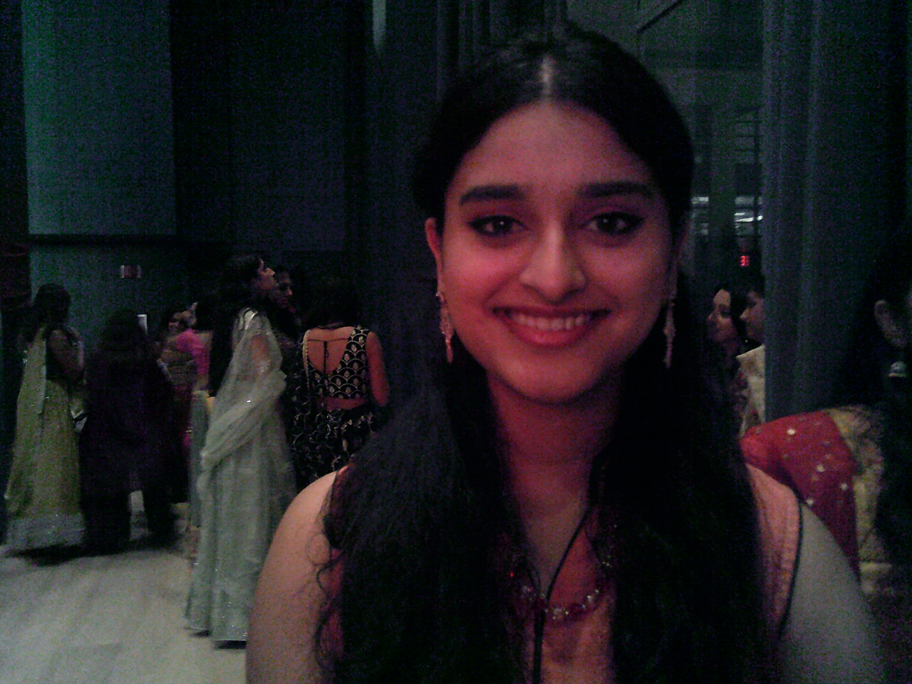

Hello! My name is Thillainayaki Sudhakar, or Thillai for short. I am a second year Computer Science and Biology major at Northeastern University, and I am very interested in bioinformatics, web development, data analysis, and machine learning. Beyond the classes I've taken at university, some of the clubs I'm active in include the NU Mars Rover Life Detection team, ViTAL's Healthcare Hackathon Organizing Team, NU UTSAV, NU WIT, NU BMES, and many others. I enjoy branching out and developing many new skills and meeting many new people.
